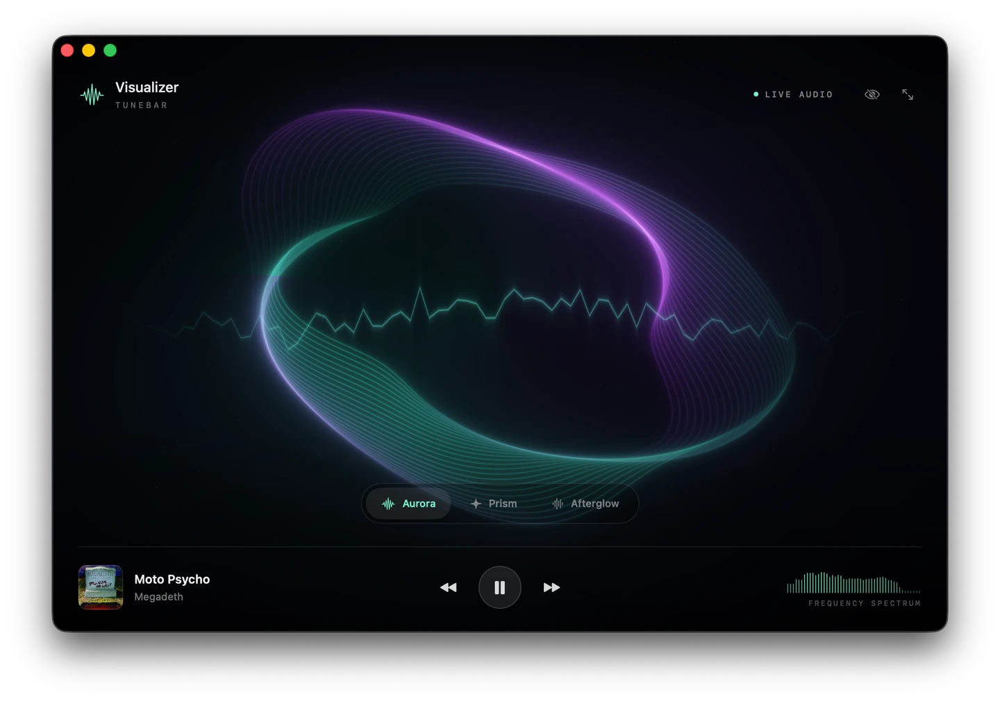

SMALL PLAYER. GOOD COMPANY.
Your music.
A little more
alive.
A home for the music you own,
right in your Mac’s menu bar.
On the Mac App Store · macOS 15 or later
A LITTLE LIGHT FOR EVERY LISTENComing in 5.0

Aurora. A softer kind of glow.
Less fuss.
More listening.
Your files. Your favorites.
MP3, FLAC, M4A, WAV, AAC, AIFF, OGG.
Just choose a folder.Always within reach.
Menu bar playback. A mini player.
Lyrics and a 10-band equalizer.Just you and your music.
No accounts, ads, or analytics.
Your library stays on your Mac.